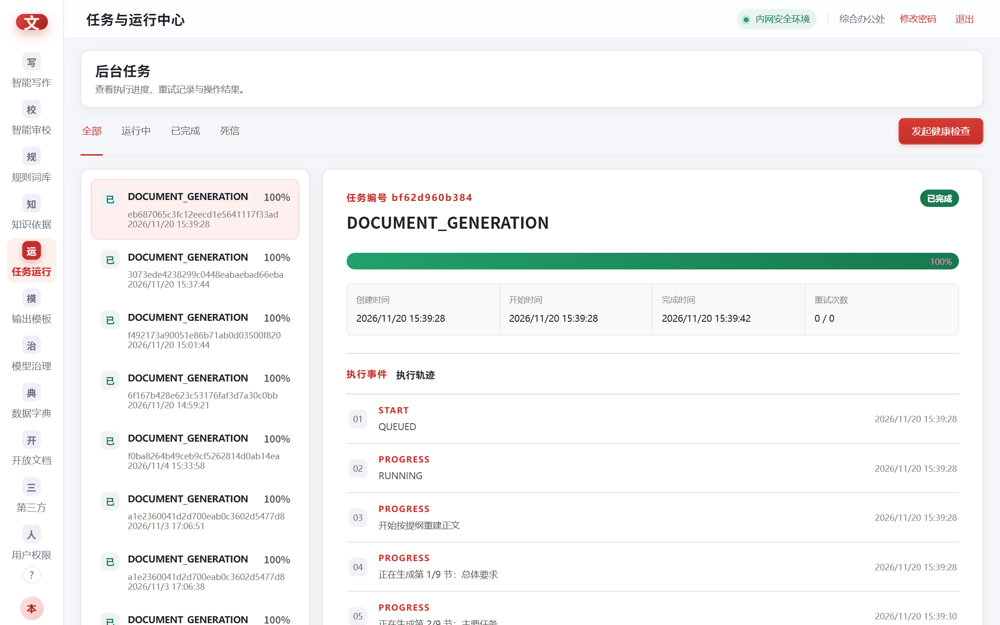
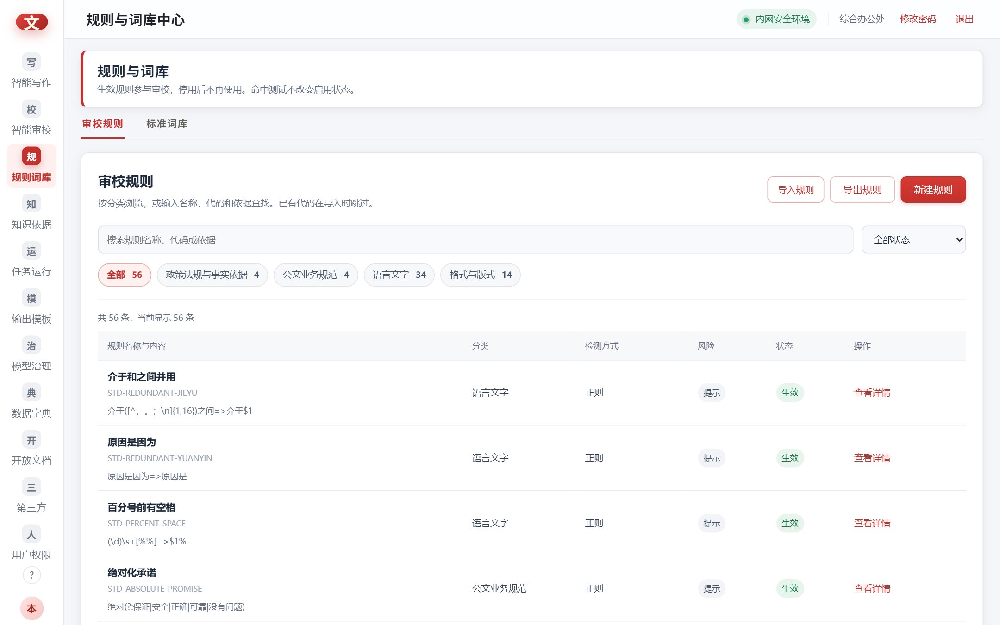

文
政文智枢政文智枢
政务公文智能写作与审校平台 · 系统演示汇报

我们的思路：不做“自动写稿器”，而是把 AI 放进规范的公文生产流程——结构先行、依据可查、版本可追、人工定稿。
| 要素 | 设置 |
|---|---|
| 文种 | 意见（法定公文，长文种） |
| 写作目的 | 部署推进“高效办成一件事”，明确总体要求、主要任务和保障措施 |
| 主送机关 | 各区人民政府，市政府各部门 |
| 篇幅 | 3000—4500 字 |
| 材料 | 本市政务服务现状摘要（虚构数据） |






| 请求头 | 说明 |
|---|---|
X-Open-App-Code | 应用编码（必填） |
X-Open-Api-Key | 应用密钥（必填） |
Idempotency-Key | 发起类接口必填，防重复 |
X-Open-User-Id 等 | 调用方用户与部门，仅用于审计 |
参考依据：《党政机关公文处理工作条例》、GB/T 9704—2012、《数据安全法》、《个人信息保护法》、《生成式人工智能服务管理暂行办法》。等保测评、涉密系统审批等需由使用单位结合部署环境另行办理。
政文智枢 · 让公文起草更规范、更高效、更可控